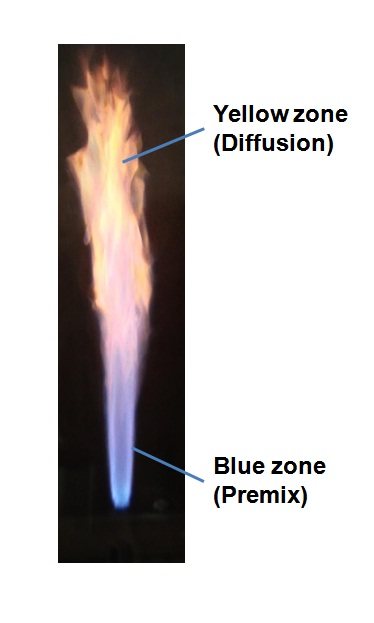
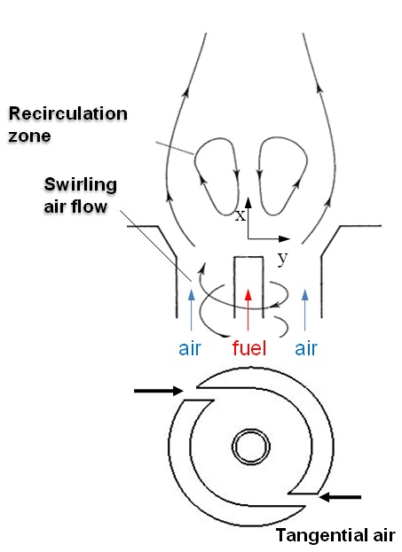
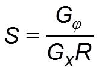

Theory
-

- In diffusion flame, reaction occurs only at the interface between fuel and oxidizer.
- In turbulent diffusion flames, turbulent convection mixes fuel and air macroscopically, followed by molecular diffusion which makes the reactants ready for chemical reaction to take place.
- Flame front is characterized by two zones
- blue zone (premix)
- Yellow zone (diffusion)
- The yellow luminescence is due to the presence of soot particles and the blue premixed is due to CH chemiluminescence signatures.
Swirl flow
-

- The expression for swirl number (S) is: 
- Air is introduced tangentially into a burner to set up swirling flow in addition to axial jet flow.
- Adverse pressure gradients in the flow field are induced to balance the centrifugal forces.
- For low swirl numbers (weak swirl), no recirculation zone will be established and for high swirl numbers strong swirl , adverse pressure gradient along the axial jet axis is large enough to form recirculation zones.
- Recirculation zone acts as the storage of heat and chemically active species.
where,
Gx: Axial flux of linear momentum
G?: Axial flux of angular momentum
R: Exit radius of burner